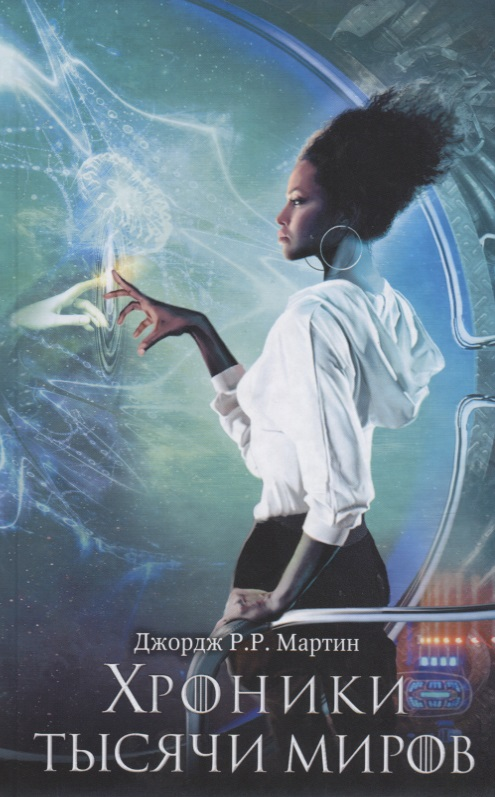

Хроники тысячи миров
Мартин Дж.
| ID товара: | 2628402 |
| Серия: | Мартин (КИНО) |
| Издательство: | АСТ |
| Год издания: | 2018 |
| Кол-во страниц: | 544 |
| ISBN: | 9785171064181 |
| Тираж: | 3000 |
| Формат: | 20.7 x 13.1 x 3.7 |
| Тип обложки: | Твердая глянцевая |
| Возрастные ограничения: | 16+ |
Аннотация
Повести и рассказы, собранные в этой книге - это История Будущего от Джорджа Мартина. Федеральная империя - объединение планет, населенных землянами-переселенцами - давно перестала существовать, ее погубила война с инопланетными расами. Теперь связи между колонизированными планетами ослаблены. Космическое человечество пережило Смутное Время и восстановило свою цивилизацию, - однако на каждой из планет бывшей Империи пошло по своему собственному, уникальному пути… "Песчаные короли", "Песнь о Лии", "Летящие сквозь ночь" - какой любитель фантастики не знает этих произведений?
Об авторе
Джордж Рэймонд Ричард Мартин (англ. George Raymond Richard Martin, род. 20 сентября 1948 года) — современный американский писатель-фантаст, сценарист, продюсер и редактор, лауреат многих литературных премий. В 1970—1980-е годы получил известность благодаря рассказам и повестям в жанре научной фантастики, литературы ужасов и фэнтези. Наибольшую славу ему принес выходящий с 1996 года цикл романов в жанре фэнтези «Песнь Льда и Огня», также экранизированный компанией HBO в виде популярного телесериала «Игра престолов».
О серии
«Тысяча миров» (англ. Thousand Worlds) — фантастический цикл американского писателя Джорджа Мартина. Цикл состоит из одного романа «Умирающий свет» (1977) и множества повестей, написанных в 1970-е — 80-е. На русском языке произведения из цикла неоднократно переиздавались с 1990 года разным составом.
Содержание
- Герой. Рассказ.
- Мистфаль приходит утром. Рассказ.
- Песнь о Лии. Повесть.
- "...И берегись двуногого кровь пролить". Повесть.
- Башня из пепла. Рассказ.
- Злоцветы. Рассказ.
- Каменный город. Повесть.
- Песчаные короли. Повесть.
- Путь креста и дракона. Рассказ.
- Летящие сквозь ночь. Повесть.
- Стеклянный цветок. Повесть.